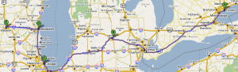

A Less Frequent World
I’ve been invited to give a talk at Michigan State University, and have a standing invitation to visit the University of Wisconsin in Madison. Twelve months ago, I would have booked a couple of flights and been done with it, but I’m trying to go a year without flying—when I calculated my carbon load in the spring, I discovered that it accounted for 85% of my impact. The best plan I’ve been able to come up with looks like this:

Frankly, it sucks. Toronto to Windsor by train, then Detroit to East Lansing by car (since my host is willing to come pick me up). From there to Madison is nine hours by bus, but with travel times like these I’m not likely to visit Chicago again any time soon, so I might as well stop for a day at Argonne National Laboratory, and if the timing works out (or if I make it work out) in Milwaukee for SIGCSE 2010. All told it would be eight nights away from family and almost 24 hours of actual travel time once you include the return trip, but what’s the alternative? I don’t have a lot of faith in carbon offset schemes, and big chunks of this itinerary simply can’t be done by train. I’m beginning to think that our future is going to be a slower and less frequent place than our present—that my generation may turn out to be the most widely traveled in both history past and history future.